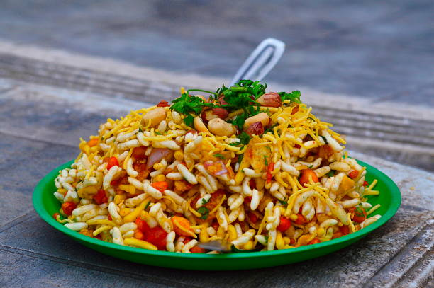

Bhel Puri - A Tangy Indian Chaat

Description
Bhel Puri is a famous Indian chaat made with puffed rice, sev, chutneys, and vegetables, giving it a perfect balance of tangy, spicy, and crispy flavors.
Ingredients
- 2 cups puffed rice
- 1/2 cup sev (fried gram flour noodles)
- 1 boiled potato (chopped)
- 1 small onion (chopped)
- 1 small tomato (chopped)
- 2 tbsp tamarind chutney
- 1 tbsp green chutney
- 1/2 tsp chaat masala
- 1/2 tsp red chili powder
- 2 tbsp chopped coriander
- Salt (to taste)
Steps
- Mix Ingredients: Combine puffed rice, sev, potatoes, onions, and tomatoes in a bowl.
- Add Chutneys: Mix in tamarind and green chutneys.
- Season: Sprinkle chaat masala, red chili powder, and salt.
- Serve: Garnish with coriander and enjoy immediately!
Home